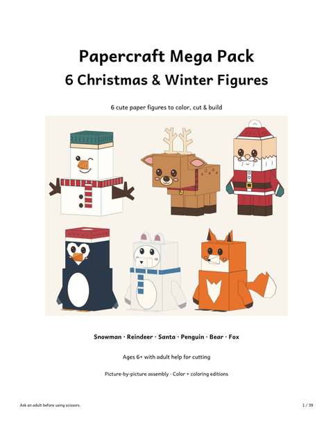
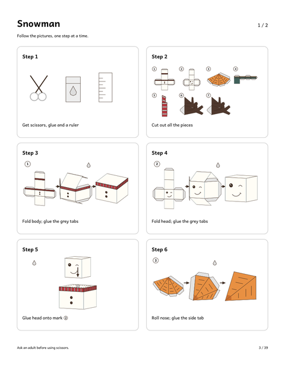
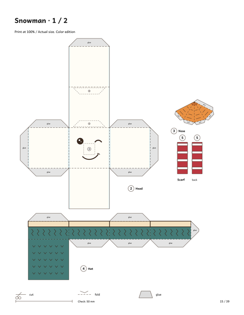
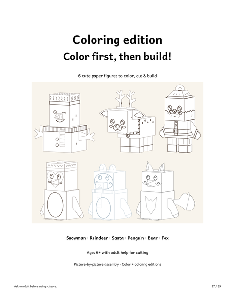
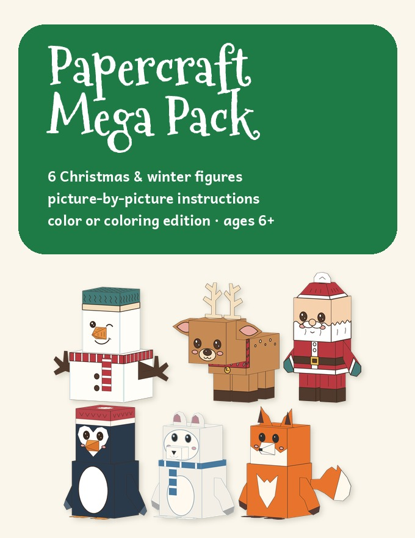
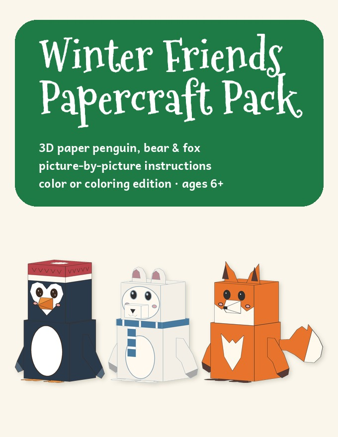

Paper Animal Crafts for Kids
6 printable 3D figures · picture-by-picture steps · ages 6+
If you are looking for paper animal crafts that kids can really finish, start with how the instructions are written. Ours are pictures, not paragraphs: small steps, numbered pieces, almost no text.
You can pick one of two packs. The Mega Pack has all six figures, the Christmas snowman, reindeer and Santa plus the winter penguin, polar bear and fox. The Winter Friends pack has just the three animals. We tested the picture-step method with a 10-year-old on the snowman, and it came out right.
Try one first. The paper snowman is free:
⬇ Download the free 3D paper snowman (US Letter PDF) ⬇ Download the free 3D paper snowman (A4 PDF)Free PDF includes:
- Picture-by-picture instructions (12 steps)
- Color template on 2 pages
The six figures in the Mega Pack




Which pack should I pick?
The Papercraft Mega Pack is the best choice if you want variety: six figures, from Santa and the reindeer to the polar bear, for one price. It works for a December plan and keeps going into January.
The Winter Friends pack is the smaller option if you only want the three winter animals: penguin, polar bear and fox.
Color it first, or build it in color
Both packs include every figure in full color and as a coloring edition with black outlines. Kids can color the pieces first, then cut, fold and glue, so every figure ends up a little different.
Both packs are PDF downloads in US Letter and A4. The pictures show 3D renders of the finished figures.
Papercraft Mega Pack: 6 Christmas & Winter Figures

- 6 standing 3D paper figures: snowman, reindeer, Santa, penguin, polar bear and fox
- Picture-by-picture instructions — up to 12 small steps per figure, almost no text
- Color edition + coloring edition (color first, then build)
- US Letter & A4 · 39 pages · instant PDF download
$10.00
Get the Papercraft Mega Pack →Winter Friends Papercraft Pack

- 3D paper penguin, polar bear and fox
- Picture-by-picture instructions — up to 12 small steps per figure, almost no text
- Color edition + coloring edition (color first, then build)
- US Letter & A4 · 21 pages · instant PDF download
$7.00
Get the Winter Friends Papercraft Pack →Tips for a smooth build
- Print at 100% ("Actual size"), on thicker paper if you have it (160–200 gsm cardstock).
- Build one figure at a time and keep the other pages in a folder.
- Grown-ups cut the smallest pieces; kids do the folding and gluing.
- For a class party, print the coloring edition and let each student pick a figure.
Frequently asked questions
What is in the Mega Pack?
Six 3D paper figures: snowman, reindeer, Santa, penguin, polar bear and fox. Each has picture steps and numbered pieces, in a color edition and a coloring edition. 39 pages, US Letter and A4.
What is the difference between the packs?
The Winter Friends pack has the three winter animals. The Mega Pack has those three plus the Christmas snowman, reindeer and Santa.
Is there a free paper craft?
Yes, the 3D paper snowman. It uses the same picture-step method as the packs.
What age is it for?
Ages 6+, with a grown-up helping with the cutting.